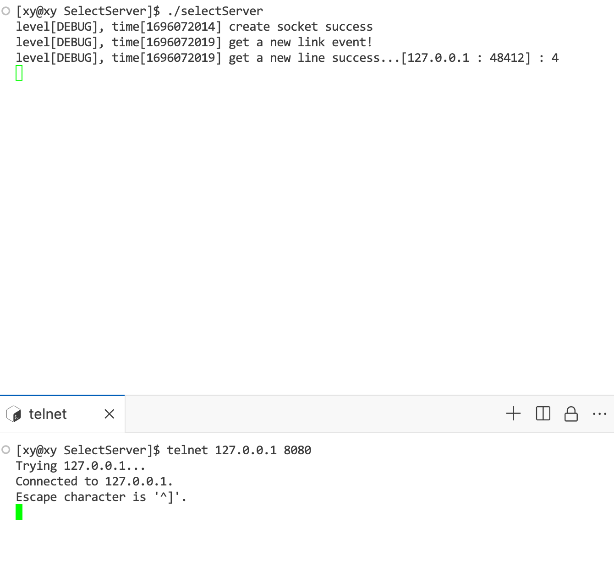
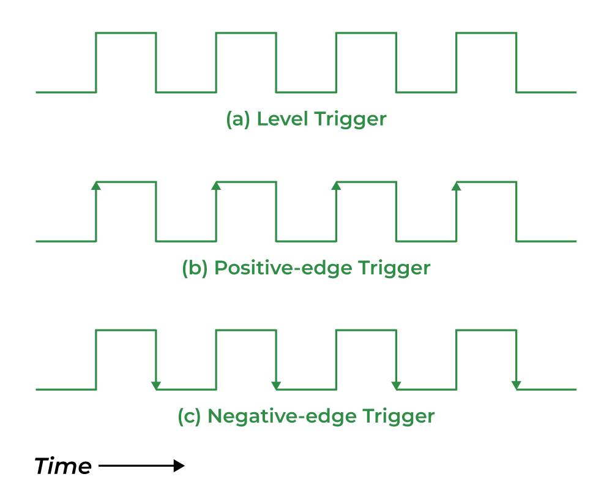

I/O 多路复用
阅读前导：
“I/O 多路复用”处于知识树中网络和操作系统的最后，因此本文默认读者有计算机网络和操作系统的基础。
1. 引入：C10K 问题
c10k 问题是指如何让一个服务器同时处理超过 10000 个客户端的连接，这是一个网络编程中的经典挑战。
切入点是一个进程或线程一次只能维护一个链接，也就是一个进程或线程一次只能对一个文件操作。要解决服务端同时处理多个链接，自然而然地想到用多进程或多线程。并且在处理意见数据接收场景时，我们通常会选择阻塞式等待（它是同步的），这是因为阻塞式等待不会占用 CPU 资源，非阻塞忙轮询占用 CPU 和 OS 资源。
问题出在两方面：
- 传统的同步阻塞 I/O 模型（如 read、recv 等 I/O 接口）无法同时处理多个数据请求，也就是一次只能处理一个 I/O 事件。
- 如果需要为每个连接创建一个进程或线程，这会消耗大量的系统资源和上下文切换开销。
作为一个服务器，它首先要实现读取客户端发送的数据，才能进行数据处理等后续操作。而实现这个读取的操作，也是要讲究效率的，它方式而不同（以读取为例）：
- 单进程模式：最简单的服务器实现方式，但是 recv、read 这样的 I/O 系统调用默认是阻塞式的，如果客户端只发送连接请求而不发送数据，会使进程阻塞，占用 CPU 和系统资源。并发性是最低的。
- 多线程模式：主进程创建线程来阻塞式地等待读取事件就绪，虽然服务器不会被阻塞，但是它创建的线程依然是阻塞的，线程资源的申请和回收也会占用系统资源。由于这个原因，多线程模式的并发性受限于机器的性能。
- 线程池模式：主进程预先创建若干个线程，用队列控制它们执行或等待任务，这虽然解决了多线程占用系统资源的问题，但是线程的数量是有限的，如果大量线程 recv、read 系统调用发生阻塞，那么也会造成同样的问题。解决办法只有把它们的操作修改为非阻塞模式，但问题又来了：线程如何得知什么时候读取事件就绪呢？
- 轮询：还是那句话，轮询会消耗 CPU 资源，过多的线程会降低效率。
- 事件驱动：服务器处理数据的本质是 I/O，I/O 的本质是“等待事件就绪”+“数据拷贝”。上面这些做法都是上层用户进程在做这两件事，影响效率的就是这个“等”。事件驱动就是将“等”这件事交给内核去做，用户进程只需要将要等待“事件”的文件描述符交给内核关心，在这期间可以做其他事情。直到事件就绪，内核通知上层应用程序。
事件驱动就是 I/O 多路复用。
2. 什么是 I/O 多路复用
I/O 多路复用（也叫多路转接）是一种解决方案，它可以让一个进程或线程同时监控多个文件描述符（通常是网络套接字），并在其中一个或多个文件描述符准备好进行 I/O 操作时（至少一个），通知应用程序进行相应的读写操作。这样，应用程序可以在等待数据的过程中执行其他任务，而不会被阻塞，从而提高了程序的性能和响应速度。
I/O 多路复用的实现方式有多种，比如 select，poll，epoll 等，它们各有优缺点，具体的选择要根据应用场景和需求来决定。
在稍后的学习过程中，我们会注意到这些 I/O 多路复用接口的参数不再像诸如 read、recv 等传统 I/O（它们默认是阻塞的）一样，它们是一个文件描述符数组，而不是单个文件描述符。
时间线：select（1983 年），poll（1980 年代末到 1990 年代初），epoll（2002 年）。
这就好像上学时老师总会定几个组长，这样每次收作业时老师只需要等这几个组长，但实际上等待不同组的同学上交作业的时间是有重叠的，这样便节省了时间。
2.1 socket 就绪条件
socket 就绪条件是指在使用 I/O 多路复用的方式来监控多个文件描述符时，判断哪些文件描述符已经准备好进行 I/O 操作（如读或写）的条件。不同的 I/O 模型和文件描述符类型可能有不同的就绪条件，但一般来说，可以分为以下几种情况：
- 一个文件描述符准备好读，当满足以下条件之一时：
- 该文件描述符接收缓冲区中的数据字节数大于等于其接收缓冲区低水位标记的当前大小（SO_RCVLOWAT）。这意味着对这样的文件描述符执行读操作不会阻塞，并返回一个大于 0 的值（也就是可读数据的大小）。
- 该连接的读半部关闭（也就是接收了 FIN 的 TCP 连接）。对这样的文件描述符的读操作将不阻塞并返回 0（也就是 EOF）。
- 该文件描述符是一个监听套接字且已完成的连接数不为 0。对这样的文件描述符的 accept 操作通常不会阻塞。
- 该文件描述符上有一个未处理的错误。对这样的文件描述符的读操作将不阻塞并返回 -1（也就是一个错误），同时把 errno 设置成确切的错误条件。
- 一个文件描述符准备好写，当满足以下条件之一时：
- 该文件描述符发送缓冲区中的可用空间字节数大于等于其发送缓冲区低水位标记的当前大小（SO_SNDLOWAT），并且该文件描述符已经成功连接（TCP）或者不需要连接（UDP）。这意味着对这样的文件描述符执行写操作不会阻塞，并返回一个正值（例如由传输层接收的字节数）。
- 该连接的写半部关闭（也就是主动发送 FIN 的 TCP 连接）。对这样的文件描述符的写操作将产生 SIGPIPE 信号。
- 使用非阻塞的 connect 的套接字已建立连接，或者已经以失败告终。
- 该文件描述符上有一个未处理的错误。对这样的文件描述符的写操作将不阻塞并返回 -1（也就是一个错误），同时把 errno 设置成确切的错误条件。
- 异常就绪：
- socket 上收到带外数据。
[注] 带外数据和 TCP 的紧急模式相关，TCP 报头中的 URG 标志位和 16 位紧急指针搭配使用，就能够发送/接收带外数据。
3. select
3.1 select 函数
select 函数的名称的含义是：它可以从一组文件描述符中选择出那些已经准备好的文件描述符，然后返回给应用程序。
函数原型：
|
|
参数：
- nfds 是一个整数值，表示集合中所有文件描述符的范围，即所有文件描述符的最大值+1。
- readfds 是一个指向 fd_set 结构的指针，表示要监视的可读文件描述符的集合。
- writefds 是一个指向 fd_set 结构的指针，表示要监视的可写文件描述符的集合。
- exceptfds 是一个指向 fd_set 结构的指针，表示要监视的异常文件描述符的集合。
- timeout 是一个指向 struct timeval 结构的指针，表示 select 函数的超时时间（即等待时间）。
- 阻塞式：如果为 NULL 或 nullptr，表示无限等待；
- 非阻塞式：如果（都）为 0，表示不等待，直接返回；
- 规定时间内：如果为正值，表示等待的秒数和微秒数。
fd_set 是一个位图结构，它的不同标志位用来记录被监视的文件描述符的属性，如可读、可写或异常状态等，它的大小固定是 128 字节，最多 能够记录 128 * 8 = 1024 个文件描述符。原型：
|
|
因此在调用 select 函数之前，需要用 fd_set 定义一个文件描述符集合（也就是数组），以供后续添加要监视的文件描述符。
系统提供了一些接口（它们是宏实现的）来操作 fd_set 结构，如：
|
|
参数 timeout 指向的结构体包含秒和毫属性：
|
|
值得注意的是，除了第一个 nfds 参数之外，剩下的四个参数都是输入输出型参数：
- 输入时：用户告知内核应该要关心哪些文件描述符对应的事件（读，写或异常）；
- 输出时：内核告知用户，它关心的文件描述符对应的事件中的某些事件已经就绪。
具体细节将会在代码中体现。
返回值（整数）：
- 成功：返回准备好的文件描述符个数；
- 失败：
- 超时：返回 0；
- 出错：返回-1，设置错误码 errno。
其中，出错后错误码可能会被设置为：
EBADF：文件描述符为无效的或该文件已关闭。EINTR：此调用被信号所中断。EINVAL：参数 nfds 为负值。ENOMEM：核心内存不足。
3.2 select 服务器
Sock 类
由于本节是网络部分中靠后的知识点，因此 socket 套接字的编写不是本节的重点，将它们封装为一个 Sock 类，以供后续使用。
|
|
可以把它们直接当做系统调用来看，只不过是省略了参数设置的细节。
日志类
为了方便观察现象，下面实现了一个简单的 Log 日志类（这里是我直接拿了之前写的），下面的代码中可以把它当做普通的打印语句。
|
|
select 的基本工作流程
注：在这三个（select、poll 和 epoll）接口中，select server 的实现难度最大，但它们都是类似的。本文实现的三个 server 中只实现读操作，读、写和异常三个操作将会在下一篇文章中实现。由于网络并不是本节的重点，因此在阐述时默认已经完成套接字 Socket 的编写。
-
初始化服务器，完成套接字的创建、绑定和监听。
-
创建一个 fd_set 结构体（它底层是一个数组），用来存放所有的套接字对象，包括服务器套接字和客户端套接字。使用 FD_ZERO() 和 FD_SET() 宏来初始化和添加套接字到集合中。
-
进入一个无限循环，不断地检查套接字的状态。使用 select() 函数来实现，它会返回三个集合，分别是可读的套接字，可写的套接字，和发生异常的套接字。将之前创建的 fd_set 集合作为 readfds 参数传入，表示关注哪些套接字的可读状态。
-
遍历返回的可读套接字集合，对每个套接字进行相应的处理。
- 如果套接字是服务器套接字（监听套接字），那么表示有新的连接请求到来，使用 accept() 函数来接受连接，并返回一个客户端套接字和客户端地址。将客户端套接字添加到之前的 fd_set 集合中，以便下次检查它的状态。
- 如果套接字是客户端套接字，那么表示有新的数据到来，使用 recv() 函数或 read() 函数来接收数据。对接收到的数据进行处理，例如打印到屏幕，或者回复给客户端。如果接收到的字节数（返回值）为零，那么表示客户端已经断开连接，使用 close() 函数来关闭套接字，并从 fd_set 集合中移除它。
上面的“套接字”在网络层面指的是套接字文件，在系统层面指的是套接字对应的文件描述符，这是因为在 Linux 一切皆文件的意义下，文件描述符可以操作套接字文件。套接字编写时用到的 socket() 函数的返回值就是一个文件描述符，本质是数组的索引值。
SelectServer 类
构造函数和析构函数
在构造函数中实现套接字的创建、绑定和监听。在析构函数中关闭套接字文件描述符。
|
|
值得注意的是，这里使用的是云服务器测试，所以 IP 地址可能是厂商虚拟提供给我们的，在实现 Sock 类时，设置为任何 IP 都可以使用，如果要显式地设置为指定 IP 作为参数也可以。
作为一个服务器，端口号和监听套接字文件描述符是必不可少的。
Start 函数
当服务器初始化完成以后，就要让它运行起来，运行的逻辑在 Start 函数中实现。
- 创建文件描述符集合并初始化
- 在一个循环中添加套接字到集合中，并且将集合作为参数传入 select 函数，表示让内核关心这些文件描述符的 I/O 事件是否就绪
|
|
在 main.cc 中，将服务器运行起来（使用普通指针也可以）：
|
|
测试：

设置 timeout 参数为 3.0 秒，但是 3 秒过后却不断地打印。这是因为 timeout 是一个输入输出型参数，它的值就像倒计时一样，如果在这个时间范围内成功返回，那么 timeout 最终输出的值就是剩余的秒数；如果超时，它就是 0，那么下次循环时它依然是 0，也就是让 select 函数非阻塞式地等待。
所以要将 timeout 参数的初始化放在循环内。这个例子只是为了说明 timeout 是一个输入输出型参数，为了更好地观察现象，后续测试仍然以阻塞式等待，也就是参数 timeout 的值为 NULL 或 nullptr。

为什么 select 函数的第一个参数是套接字的文件描述符+1？
这是因为 select 函数需要知道要监视的文件描述符的范围，即从 0 到最大的文件描述符。文件描述符是从 0 开始编号的，所以最大的文件描述符+1 就是文件描述符的总数。select 函数会遍历这个范围内的所有文件描述符，检查它们是否在指定的集合中，以及它们是否有可读、可写或异常的事件发生。如果第一个参数传递的是最大的文件描述符，那么 select 函数就会忽略这个文件描述符，因为它不在遍历的范围内。所以，为了让 select 函数能够正确地监视所有的文件描述符，必须传递最大的文件描述符+1 作为第一个参数。
下面用 telnet 工具，在本地模拟客户端进行测试：

但是一旦连接成功，服务端会一直打印“新连接”信息，这是因为建立连接后，我们并没有设置将连接“取走”的逻辑，select 函数就会不断地在循环中通知用户进程。
什么是将连接“取走”呢？就是调用 Accept() 函数。
为什么不在循环中调用 Accept() 函数呢？
这是因为 Accept() 函数是阻塞式的，它会主动地使用户进程阻塞等待，直到一个新连接到来。多路复用 I/O 就是解决这个问题的，select 函数可以代替它等待，直到有新连接请求到来后才会通知用户进程，所以要把它留在有连接请求到来时再调用。
HandlerEvent 函数
它应该在 Start 函数的最后一个分支被调用。
|
|
这个函数是类内辅助的，并不对外开放，所以用 private 限制权限。
通过 FD_ISSET 宏判断 _listensock 是否在 rfds 集合中就绪，如果就绪，那么就用 Accept() 函数处理连接请求，并打印请求的 IP 和端口；否则提示错误。
这次调用 Accept() 还会被阻塞吗？
这个过程是不会阻塞的，因为 select 函数已经替用户进程等待连接了。
select 函数不是监听套接字对应的文件描述符的 I/O 事件是否就绪吗？为什么它还能代替用户进程阻塞式地监听客户端发出的连接请求？是不是站在文件读写的角度看，连接请求也是一种 I/O?
select 函数的作用是监听一组文件描述符的 I/O 事件是否就绪，也就是说，它可以检测这些文件描述符是否可以进行读、写或异常处理。当我们使用 select 函数监听套接字对应的文件描述符时，我们其实是在关注这些套接字的 I/O 状态，而不是它们的连接状态。连接状态是由 TCP 协议来管理的，它是在传输层的一个抽象概念，而不是在应用层的一个 I/O 操作。
那么，为什么 select 函数还能代替用户进程阻塞式地监听客户端发出的连接请求呢？这是因为在 TCP 协议中，当客户端向服务器发送一个 SYN 包，表示发起一个连接请求时，服务器会回复一个 SYN+ACK 包，表示接受请求，并将该请求放入一个队列中，等待用户进程调用 accept 函数来接受连接。这个队列的长度是有限的，由 listen 函数的 backlog 参数指定。当队列满了之后，服务器就不会再回复 SYN+ACK 包，而是直接丢弃后续的连接请求，直到队列有空位为止。
这样，我们就可以把服务器套接字对应的文件描述符的可读事件，理解为队列中有连接请求等待被接受。当 select 函数检测到服务器套接字可读时，就表示有客户端发出的连接请求到达了服务器，并被放入了队列中，等待用户进程调用 accept 函数来接受连接。这样，我们就可以用 select 函数来代替用户进程阻塞式地监听客户端发出的连接请求，而不会错过任何一个连接请求。
所以，站在文件读写的角度看，连接请求也是一种 I/O，因为套接字也是一种文件，但是它是一种特殊的 I/O，它是由 TCP 协议在传输层实现的，而不是由用户进程在应用层实现的。我们只是借用了 select 函数的功能，来实现一个非阻塞的连接监听，而不是真正地对连接请求进行读写操作。
测试：
注意，处理完连接后，我们不应该立即调用 recv、read 这样传统的阻塞式 I/O 接口，为什么呢？因为即使建立了连接，用户进程是无法的值客户端什么时候会发送数据的，极端地说，如果有恶意客户端只连接不发送，会造成服务端阻塞，这样就前功尽弃了。但这个场景依然是我们熟悉的，我们第一次处理阻塞式 Accept() 函数也是类似的，那就再用一次 select 函数，只不过这次连接已经建立了，那么任务变成了：监测客户端是否发送数据，有数据说明读事件应该就绪，通知用户进程读取；反之则否。这样读取时用户进程就可以避免因为不知道客户端什么时候发送数据而导致的阻塞了。
现在的问题是：
- Start() 和 HandlerEvent() 是两个独立的函数，很难将后者获取的连接再次交给前者监测。
- nfds 的一致性：服务端需要和若干个客户端建立连接，Socket 会不断增加，对应的文件描述符也会不断变化。另外，客户端的服务请求在时间线上并不是连续的，所以 select 函数的第一个参数可能不一定是最大的文件描述符+1。
- rfds（本次示例）、writefds、exceptfds 以及 timeout 参数（如果需要）都是输入输出型参数，输入和输出两个状态会影响它们的值。
这三个问题需要我们手动地将合法的文件描述符保存起来，以更新 select 函数的第一个参数（即最大的 fd）和更新文件描述符集合 fd_set。
select 服务器的编写模式
select 服务器的一般编写模式（以读取为例）：
- 用一个数组维护所有的合法 fd
- 在一个无限循环中（服务器需要一直运行）：
- 遍历第一次数组，记录最大的 fd 值，并添加所有需要关心的文件描述符 fd 到文件描述符集合 fd_set 中
- 调用 select 函数进行事件监测
- 遍历数组，找到就绪事件，根据就绪事件的类型（读或写），完成对应的动作（下面以读为例）。这是因为文件描述符集合 fd_set 中，既包含套接字文件描述符，也包含普通的文件描述符。
- Accepter：当连接事件就绪，我们要对连接（套接字文件描述符）进行 Accept()。
- Recver：当写事件就绪，我们要对普通文件描述符进行读取（recv() 或 read()）。
可以使用原生数组，也可以为了方便维护，使用 vector 容器，但为了突出 select 服务器的缺点（引入另外两个更好的多路复用 I/O 接口），下面使用更“地道”的原生数组。原生数组在定义时必须指定大小，所以我们将数组的大小设置为 select 函数能够同时处理的最大事件数，即 128*8=1024 个字节，取名为_fd_array，作为 SelectServer 类的成员属性，这样便能减少函数传参的成本。
初始化：
数组在 SelectServer 类的构造函数中被初始化为 FD_NONE（自定义值为-1 的宏），表示数组中这个位置未添加文件描述符，并且约定下标为 0 的位置为监听套接字的文件描述符。
这是一种编程习惯或者约定，方便管理和操作文件描述符集合 fd_set。一般来说，我们会将服务器套接字（包括监听套接字、已连接的套接字或者其他，只要是在服务端使用的）作为第一个元素添加到文件描述符集合中，这样可以保证它在 select 函数返回后被优先检查，避免因为队列满了而丢失连接请求。另外，这样也可以简化代码的逻辑，因为我们只需要遍历从 1 开始的文件描述符，就可以处理所有的客户端套接字，而不需要额外判断服务器套接字是否在集合中。
维护：
- 在定义一个文件描述符集合后，遍历
_fd_array[i]，如果_fd_array[i]的值为 FD_NONE，则说明这个位置的文件描述符并未被 select 函数监视，跳过；记录有效的文件描述符的同时，记录有效集合中的最大值，以保证 select 函数的第一个参数的正确性。 - 在 HandlerEvent() 函数中，处理 select 函数检测到的读取事件。但由于文件描述符集合 fd_set 中既包含了监听套接字文件描述符，也包含了普通的文件描述符，因此我们要根据它们的类型做不同的处理。在上一个 HandlerEvent() 函数的编写中，只实现了前者的处理。为了将读写逻辑模块化，将处理二者的逻辑分别用成员函数 Accepter() 和 Recver() 函数封装。
|
|
测试 ：注意到文件描述符集合 fd_set 在每次循环中都要重新定义，文件描述符也要重新添加，这是因为文件描述符是动态变化的，在每次循环的一开始，打印当前服务端系统中打开的文件描述符。下面用多个 telnet 客户端连接，进行测试：

缺陷：
值得注意的是，这里处理普通文件描述符的 I/O 事件时（只实现了读取，即 Input），只是简单地用一个数组接收客户端发送的数据，因为我们通常用数据量很小的文本来进行测试，所以在测试时不容易出错。事实是通信的数据类型不一定是文本，大小也是不确定的，所以通信双方要通过相同的协议才能完整地交换数据。
细节
- 在处理新连接请求时，只有当文件描述符合法，并且数组有剩余空间才会被添加到数组中。
- 在差错处理时，必须先关闭文件描述符，然后再将它设置为默认值 FD_NONE。否则就是关闭-1 这个文件描述符，会出错。
- 文件描述符分为两种，一种是套接字文件描述符，一种是普通文件描述符。我们要知道，客户端连接到服务器，必须建立连接，然后才能进行数据传输（TCP 协议，telnet 工具也是）。言外之意是，普通文件描述符就是套接字文件描述符通过 Sock 类中的 Accept() 得到的（它调用了 accept() 系统调用，其返回值是一个普通文件描述符），这在“Linux 一切皆文件”的意义下是说得通的。因此普通文件描述符要被 select 监视，一定是在建立连接之后进行的（上面有说到，来自客户端的建立连接请求在文件读写层面上看也是一种 I/O 请求，也是被 select 监听的）。
- 数组就是 Accepter() 和 select() 之间的桥梁，因为文件描述符集合 fd_set 每次循环都会通过这个数组重新添加，所以在 Accept() 中获取到成功连接后的 sock 时，就不用再主动调用一次 select 函数以让它检测这个文件描述符的 I/O 事件了，而是将 sock 添加到数组中，下一次 while 循环时就会在第一次 for 循环中被添加到 fd_set 中，这样 select 函数只通过数组来监测文件描述符，而不用担心文件描述符的类型。由于我们约定数组第一个元素为套接字文件描述符，这样我们就能通过元素的值来处理连接（Accepter()），还是处理 I/O 事件（Recver()）。
理解第三点和第四点，是理解 I/O 多路复用服务器的要点。
下面就第三点进行测试，代码中为三个函数增加了一个计数器，以观察现象：

通过测试结果可以知道：每个（TCP）客户端在进行数据传输之前，都必须与服务端建立连接，服务端每建立一个新的连接，都要调用一次 Accepter()；而同一个客户端每次发送信息都要调用一次 Recver()，而不会调用 Accepter()，因为 Accepter() 只是用来处理连接事件的，也就是处理就绪的监听套接字。
这样便实现了一个简单的读模式的 I/O 多路复用的服务器，虽然它是一个单进程服务器，但它能够同时监测 1024 个（包括 1 个监听套接字）文件描述符。
[注] 在学习 select 时，我们只以读为例，如果要实现写，和读是类似的，用一个数组维护所有合法的文件描述符，需要 select 监测的文件描述符只要添加到这个数组即可。
关于完整服务的 I/O 多路复用的服务器，将会在下一节的 Reactor 模式的服务器中实现。
3.3 优缺点
select 服务器可以在一个进程或线程中同时处理多个客户端的连接和数据请求，提高了服务器的并发性能。select 服务器有以下优缺点：
- 优点：
- select 服务器可以使用单个进程或线程来处理多个客户端，节省了创建和切换多个进程或线程的开销。
- 缺点：
- select 服务器每次调用 select 函数，都要重新设定（本质是拷贝）参数，而几个参数都是输入输出型参数，所以需要把文件描述符集合从用户态拷贝到内核态（内核不信任任何用户空间的指针，通过拷贝自保），这个开销在文件描述符很多时会很大。
- select 服务器每次调用 select 函数，都需要在内核遍历传递进来的所有文件描述符，这个开销在文件描述符很多时也很大。
- select 服务器支持的文件描述符数量受限于 FD_SETSIZE，一般为 1024，如果要增加上限，需要重新编译内核。
- select 服务器无法区分哪些文件描述符是可读的，哪些是可写的，哪些是异常的，只能通过遍历来判断，造成多次遍历。实际上，操作系统在实现 select 时，底层也是需要遍历的。如果实现时使用 vector 容器，虽然使用上比较简单，但是底层的遍历操作就被屏蔽了，这个缺点就比较难暴露出来。
这四个缺点造成了 select 服务器的编写逻辑比较复杂，例如我们在维护数组时，文件描述符的分布并不是连续的，如果要让它们分布变得集中，还要再增加诸如排序等逻辑，然而这样做可能并不会对性能产生多大的帮助。
小结 select 函数的原理：它会将用户传入的文件描述符集合拷贝到内核空间，然后遍历这个集合，检查每个文件描述符的状态，如果有就绪的文件描述符，就将其标记为可读、可写或异常，并将就绪的文件描述符的数量返回给用户。这个遍历的过程是比较耗时的，尤其是当文件描述符的数量很多时，会造成很大的开销。
3.4 应用场景
select 服务器的应用场景一般有以下几种：
- 如果一个 TCP 服务器既要处理监听套接口，又要处理已连接套接口
- 如果一个服务器即要处理 TCP，又要处理 UDP
- 如果一个服务器要处理多个服务或多个协议
- 当服务器的并发量不是很大，且对性能要求不是很高时，可以使用 select，因为它的编程接口比较简单，而且在多连接中的少部分连接比较活跃时，select 的性能可能会更好。
少量连接活跃，意味着大多数连接都在进行 I/O 操作，这需要耗费许多时间等待事件就像，那么 I/O 多路复用就可以将等待的时间重叠，以提高并发性。大量连接活跃，意味着只有少部分连接需要等待，那么直接等待就好了，杀鸡焉用牛刀，因为多路复用也需要占用资源。
根据具体情况而定，需要考虑连接数量、并发性能要求、代码实现难度等多个因素。
4. poll
4.1 poll 函数
poll 函数的原理和 select 函数是一样的，它们只负责 I/O 中“等”的部分，也就是：
- 输入时：用户告知内核应该要关心哪些文件描述符对应的事件（读，写或异常）；
- 输出时：内核告知用户，它关心的文件描述符对应的事件中的某些事件已经就绪。
不同的是它解决了 select 函数的大部分缺点：
- poll 函数没有最大文件描述符数量的限制
- poll 函数可以更精确地控制超时时间，以毫秒为单位，而 select 函数以微秒为单位。
- poll 函数可以区分普通数据和紧急数据，通过 POLLPRI 事件，而 select 函数只能通过异常描述符集合来检测紧急数据。
- poll 函数不会修改传入的文件描述符集合，而 select 函数会修改，所以每次调用 select 函数都需要重新设置文件描述符集合。
poll 函数的名称来源于英文单词“polling”，意思是“轮询”。poll 函数通过轮询来监听多个文件描述符的状态，并在发生事件时通知应用程序。
原型：
|
|
参数：
-
fds： 指向一个结构体数组的指针，每个数组元素都是一个 struct pollfd 结构，用于指定测试某个给定的 fd 的条件，数组的大小可以是任意的；
-
nfds： 用来指定第一个参数数组元素个数。nfds_t 的原型是 unsigned long int。
-
timeout：指定等待的毫秒数，取值：
- -1：阻塞等待，直到被监视的某个文件描述符对应的事件就绪；
- 0：非阻塞等待，无论 I/O 是否准备好，poll() 都会返回；
- 规定时间：在规定时间内阻塞等待，超时则直接返回。
其中，struct pollfd 的定义如下：
|
|
属性说明：
- fd： 每一个 pollfd 结构体指定了一个被监视的文件描述符，可以传递多个结构体，指示 poll() 监视多个文件描述符。
- events：事件掩码， 指定 poll() 需要监测文件描述符 fd 的事件（输入、输出、错误），每一个事件有多个取值，稍后介绍。
- revents（return events）：事件掩码， poll() 从内核返回时告知用户该文件描述符 fd 上的哪些事件已经就绪。
掩码是用来表示某些位的状态或功能的二进制数，它的每一位都有其含义。事件掩码用来表示文件描述符的状态。
返回值：
- 成功：返回结构体中 revents 域不为 0 的文件描述符个数；如果在超时前没有任何事件发生，返回 0；
- 失败：返回 -1，并设置错误码 errno 为下列值之一（暂时不用关心）：
- EBADF：一个或多个结构体中指定的文件描述符无效。
- EFAULT：fds 指针指向的地址超出进程的地址空间。
- EINTR：请求的事件之前产生一个信号，调用可以重新发起。
- EINVAL：nfds 参数超出 PLIMIT_NOFILE 值。
- ENOMEM：可用内存不足，无法完成请求。
events 和 revents 的取值：
| 事件 | 描述 | 是否可作为输入 | 是否可作为输出 |
|---|---|---|---|
| POLLIN | 数据（包括普通数据和优先数据）可读 | 是 | 是 |
| POLLRDNORM | 普通数据可读 | 是 | 是 |
| POLLRDBAND | 优先级带数据可读（Linux 不支持） | 是 | 是 |
| POLLPRI | 高优先级数据可读，比如 TCP 带外数据 | 是 | 是 |
| POLLOUT | 数据（包括普通数据和优先数据）可写 | 是 | 是 |
| POLLWRNORM | 普通数据可写 | 是 | 是 |
| POLLWRBAND | 优先级带数据可写 | 是 | 是 |
| POLLRDHUP | TCP 连接被对方关闭，或者对方关闭了写操作，它由 GNU 引入 | 是 | 是 |
| POLLERR | 错误 | 否 | 是 |
| POLLHUP | 挂起。比如管道的写端被关闭后，读端描述符上将收到 POLLHUP 事件 | 否 | 是 |
| POLLNVAL | 文件描述符没有打开 | 否 | 是 |
它们是宏，其二进制序列中只有一个比特位为 1，且以 1 的位置区分。例如：
|
|
在 poll 的测试中，我们只使用 POLLIN 和 POLLOUT。
值得注意的是，poll 函数的所有参数都不再是输入输出型参数，而是只输入或只输出的参数，这得益于数组的元素是一个 pollfd 结构体，它包含一个文件描述符和一个事件掩码。这个参数在调用前只需要指定要监视的文件描述符（fd）和事件（event），而在调用后只需要返回实际发生的事件（revent），不需要修改文件描述符。这样的参数在内核和用户态之间切换时，只需要进行一次拷贝，即从用户态拷贝到内核态，这会减少系统的开销和延迟。
回忆 select 函数，它在被调用前需要指定要监视的文件描述符，而在调用后需要返回就绪的文件描述符。这样的参数不仅会修改原有的文件描述符，而且在内核和用户态之间切换时，需要进行两次拷贝，这会增加系统的开销和延迟。
这意味着某个结构体的 fd 属性只需要设置一次，而且就 fd 而言，它对于内核和用户空间都是只读的（因为没有写的必要），用户只需要设置 fd 的值，以及它在内核中被监测时应该以何种状态返回用户空间；而内核只需要监视 fd，通过 fd 的状态设置 revent 的值。
4.2 poll 服务器
下面就 select 服务器的代码进行改写，得益于 poll 解决了 select 每次都要重新设置参数的问题，poll 服务器的代码编写难度降低。
动态数组的维护
由于 poll 的第一个参数是一个动态数组，所以将 struct pollfd *类型的指针和规定的默认数组长度作为类成员。
在构造函数中为数组分配空间，并初始化为默认状态；在构造函数中释放空间。数组的默认长度可以作为构造函数的参数，也可以在类内定义。
当设置文件描述符到数组时，如果容量已满，则以 2 倍的方式扩容，这在代码中将会体现。
事件掩码的使用
两个事件掩码对应着两个方向，表示着 fd 对应的事件是否就绪：
- 用户->内核：event，和 fd 对应，是用户设置的，它们两个被设置时要同时在一起。
- 内核->用户：revent，和 fd 对应，是内核设置的，用户只需要读取它。
掩码是一个二进制数字，所以用 & 运算判断其状态。
实现
|
|
4.3 优缺点
优点：
- poll 函数不需要计算最大文件描述符加一的大小，因为它使用一个结构体数组来传递需要监视的文件描述符和事件。
- poll 函数在处理大量文件描述符时比 select 速度更快，因为它没有最大连接数的限制，而且不需要遍历整个文件描述符集合。
- poll 函数将输入输出参数进行分离，不需要每次调用都重新设置文件描述符集合。
缺点：
- poll 函数仍然需要将大量的结构体数组在内核态到用户态（虽然只有这一个方向，但是它是结构体）进行复制，这会增加系统的开销和延迟。
- [主要] poll 函数返回后，仍然需要轮询结构体数组来获取就绪的文件描述符，这会降低效率。
- poll 函数在监视的文件描述符数目增多时，效率会线性下降，因为每次调用都需要遍历所有的结构体数组，而且可能只有很少的文件描述符处于就绪状态。
5. epoll
epoll 是 Linux 内核为处理大批量文件描述符而设计的多路复用 I/O 机制。它是 select 和 poll 的改进版本，具有以下优势：
- 支持边缘触发模式：在边缘触发模式下，只有当文件描述符的状态从未触发变为触发时，epoll_wait() 才会通知用户进程。这可以避免重复的 epoll_wait() 调用，提高程序的性能。
- 使用红黑树来维护文件描述符：红黑树是一种高效的数据结构，可以快速查找和删除文件描述符。
- 可以动态添加和删除文件描述符：epoll 允许用户在程序运行时动态添加和删除文件描述符，这对于高并发应用程序非常重要。
epoll 的名称由两个部分组成：
- e 代表“event”，表示事件。
- poll 代表“polling”，表示轮询。
5.1 epoll 相关接口
epoll 是一种模型（类），select 和 poll 最大的问题就是用户要维护一个第三方数组、轮询、内核与用户态数据拷贝的成本。epoll 模型提供了多个接口，离不开其底层实现，这么做提高了灵活性、效率和易用性。
epoll_create
用于创建一个 epoll 实例或句柄。
|
|
参数：
- size：epoll 实例的最大文件描述符数。
这个参数不同于 select 中的第一个参数，给出最大监听的 fd+1 的值。需要注意的是，当创建好 epoll 句柄后，它就是会占用一个 fd 值，在 linux 下如果查看 /proc/进程 id/fd/，是能够看到这个 fd 的，所以在使用完 epoll 后，必须调用 close () 关闭，否则可能导致 fd 被耗尽。
返回值：
- 成功：返回 epoll 实例的文件描述符；
- 失败：返回 -1。
句柄是一个用来标识对象或资源的唯一标识符。句柄通常由操作系统或应用程序管理，它可以用于访问或操作对象或资源。在 Linux 操作系统中，句柄是一个结构体。我们可以把句柄当做对象或资源的“身份证”。
epoll_ctl
用于添加、修改或删除一个文件描述符到 epoll 实例中。
|
|
参数：
- epfd：epoll 实例的文件描述符（即 epoll_create () 的返回值）；
- op：要进行的操作，可以是：
- EPOLL_CTL_ADD：注册新的文件描述符到指定的 epoll 模型中；
- EPOLL_CTL_MOD：修改已经注册的文件描述符的监听事件；
- EPOLL_CTL_DEL：从 epoll 模型中删除指定的文件描述符。
- fd：要添加或修改的文件描述符；
- event：用于指定要监听的事件类型。
它不同与 select 是在监听事件时告诉内核要监听什么类型的事件，而是在这里先注册要监听的事件类型。epoll_wait 方法返回的事件必然是通过 epoll_ctl 添加到 epoll 中的。
struct epoll_event
用于指定要监听的事件类型。
|
|
参数：
- events：要监听的事件类型，可以是以下值之一：
- EPOLLIN：文件描述符可读。
- EPOLLOUT：文件描述符可写。
- EPOLLPRI：文件描述符有紧急数据可读。
- EPOLLERR：文件描述符发生错误。
- EPOLLHUP：文件描述符被挂起。
- EPOLLET：边缘触发模式。
- data：是一个联合体结构，表示附加数据，可用于存储应用程序自定义的数据。
返回值：
- 成功：返回 0；
- 失败：返回 -1 并设置错误码。
epoll_data_t
|
|
- ptr：指向一个回调函数，该回调函数会在事件发生时被调用。
- fd：文件描述符。
- u32：32 位无符号整数。
- u64：64 位无符号整数。
epoll_wait
用于等待事件发生。
|
|
参数：
- epfd：epoll 实例的文件描述符（即 epoll_create () 的返回值）；
- events：结构体数组，用于存储发生了事件的文件描述符；
- maxevents：要监听的最大事件数。不能大于创建 epoll_create () 时的 size，通常 maxevents 参数与预分配的 events 数组的大小是相等的。
- timeout：等待事件的超时时间，单位为毫秒。
- -1：阻塞等待，直到被监视的某个文件描述符上的某个事件就绪。
- 0：非阻塞等待，无论被监视的文件描述符上的事件是否就绪，立即返回。
- 规定时间：阻塞等待，直至超时。
epoll 将会把发生的事件复制到 events 数组中（events 不可以是空指针，内核只负责把数据复制到这个 events 数组中，不会去帮助我们在用户态中分配内存。内核这种做法效率很高）。
返回值：
- 成功：返回发生了事件的文件描述符数；
- 如果 timeout 时间耗尽，则返回 0；
- 失败：返回 -1 并设置错误码：
- EBADF：传入的 epoll 模型对应的文件描述符无效。
- EFAULT：events 指向的数组空间无法通过写入权限访问。
- EINTR：此调用被信号所中断。
- EINVAL：epfd 不是一个 epoll 模型对应的文件描述符，或传入的 maxevents 值小于等于 0。
epoll 事件类型
- EPOLLIN：表示对应的文件描述符可以读（包括对端 SOCKET 正常关闭）。
- EPOLLOUT：表示对应的文件描述符可以写。
- EPOLLPRI：表示对应的文件描述符有紧急的数据可读（这里应该表示有带外数据到来）。（与 TCP 报头的紧急指针有关）
- EPOLLERR：表示对应的文件描述符发生错误。
- EPOLLHUP：表示对应的文件描述符被挂断，即对端将文件描述符关闭了。
- EPOLLET：将 epoll 的工作方式设置为边缘触发（Edge Triggered）模式。
- EPOLLONESHOT：只监听一次事件，当监听完这次事件之后，如果还需要继续监听该文件描述符的话，需要重新将该文件描述符添加到 epoll 模型的队列中。
5.2 epoll 的工作原理
epoll 的工作原理可以分为以下几个步骤：
- 创建 epoll 对象：当我们调用 epoll_create() 函数时，会在内核中建立一颗红黑树。红黑树的节点就是调用 epoll_ctl() 系统函数时管理的需要监控的事件。此外，还会创建一个链表（即就绪队列），用于存储就绪的事件。
- 添加/修改/删除事件：通过调用 epoll_ctl() 函数，我们可以向 epoll 对象添加、修改或删除需要监控的事件。这些事件会被添加到红黑树中。
- 等待事件就绪：调用 epoll_wait() 函数时，如果有已经就绪的事件（即满足我们之前通过 epoll_ctl() 设置的条件的事件），这些事件会被添加到就绪队列。如果没有就绪的事件，那么 epoll_wait() 会阻塞，直到有事件就绪。
- 处理就绪事件：当 epoll_wait() 返回时，我们可以从就绪队列中获取并处理就绪的事件。
当进程调用 epoll_create() 函数时，Linux 内核会创建一个 eventpoll 结构体，用于存储该进程的 epoll 句柄。eventpoll 结构体包含两个主要成员：
|
|
- rbr：一个红黑树，用于存储该进程添加到 epoll 句柄中的事件。
- rdlist：一个双向链表，用于存储准备就绪的事件。
当进程调用 epoll_wait 函数时，内核会将准备就绪的事件从双向链表中移除并返回给进程。
在这个过程中，红黑树和就绪队列起着关键的作用。红黑树用于高效地存储和检索需要监控的事件（受 epoll_ctl() 的行为影响），而就绪队列则用于存储已经就绪的事件，等待用户程序来处理（（受 epoll_wait() 的行为影响））。
在 epoll 实例中，每一个被注册到 epoll 句柄上的事件都会有一个对应的 epitem 结构体。epitem 结构体包含了事件的相关信息，包括文件描述符、事件类型、事件状态等。
当进程调用 epoll_ctl 函数注册事件时，内核会创建一个 epitem 结构体并将其添加到 eventpoll 结构体的红黑树中。
以下是 epitem 结构体的定义：
|
|
其中：
- 对于 rbn 成员，ffd 和 event 共同表示：需要被监视的 ffd 上的 event 是否就绪。rbn 是一个红黑树节点，它将 epitem 结构体链接到 eventpoll 结构体的红黑树 。ffd 是一个文件描述符信息结构体，它包含了文件描述符的值和指向文件对象的指针 。event 是一个 epoll_event 结构体，它描述了感兴趣的事件和源文件描述符 。当 epoll_wait 函数被调用时，内核会遍历红黑树中的所有节点，检查每个节点对应的 ffd 上的 event 是否就绪，如果就绪，就将该节点加入到就绪列表中 。
- 对于 rdlink 成员，ffd 与 event 的含义是：就绪的 ffd 上的 event。rdlink 是用于存储就绪的文件描述符的双向链表 。当 epoll_wait 函数被调用时，内核会遍历红黑树中的所有节点，检查每个节点对应的 ffd 上的 event 是否就绪，如果就绪，就将该节点加入到就绪列表中 。
如果红黑树中节点对应的事件已经就绪了，那么红黑树中会删除这个节点吗？
不会。虽然这些已经就绪的元素已经对于内核而言已经不需要被监视了，但是删除红黑树中的节点会破坏它的平衡性，影响效率（也就是会占用一定时间）。所以内核才会用一个就绪队列保存它们，而且如果一个事件已经就绪了，那么它很可能在很短的时间内就会被用户进程处理，也就是说它在下一次 epoll_wait 调用时被返回给用户空间。如果删除节点的话，可能在红黑树正在调整形态时，用户进程就已经来取就绪事件了，所以没有必要从红黑树中删除它。而且红黑树严格限制左右子树的平衡性（这使得树的高度尽量小），作为一个高效的搜索结构，它的查找时间复杂度取决于树的高度，不删除反而影响不大。
只有当用户调用 epoll_ctl() 将文件描述符从 epoll 中移除时，红黑树中的节点才会被删除。具体来说，epoll_ctl() 会调用 ep_remove() 函数来删除节点。
与 select 和 poll 相比，epoll 的优势在于它能够更高效地处理大量的并发连接。这是因为在内核中，epoll 使用红黑树来存储和检索事件，而不是像 select 和 poll 那样进行线性扫描。此外，epoll 使用就绪队列来存储已经就绪的事件，这样在事件就绪时，我们的程序只需要处理就绪队列中的事件，而不需要像 select 和 poll 那样检查所有的事件。
用户程序并不需要关心内核是如何维护要监听的文件描述符的，只需要从就绪队列中以 O(1) 的时间复杂度取出文件描述符然后处理它，这就是一种生产者消费者模式。
既然是生产消费模式，那么这些被链入到就绪队列中的事件就是临界资源，用户进程在取出就绪队列中的事件时，是持有互斥锁的同时，通过队列的首地址找到对应的事件的。当多个执行流访问同一个临界资源时，需要在等待队列中等待。
实际上，结构体除了红黑树和就绪队列以外，还有锁（lock、mtx）和等待队列（wq，wait queue），以保证并发安全和异步通知。

图片来源：linux 内核 Epoll 实现原理
既然不使用数组，也就是说不用轮询，那么 epoll 模型如何知晓监控的文件描述符的事件是否已经就绪的？
当某个文件描述符发生事件时，内核会将该事件通知 epoll 句柄。内核会将 epoll_event 结构体复制到内核缓冲区中。然后，内核会使用将该结构体通知 epoll 句柄。
epoll_event 结构体中的 ptr 保存着回调函数的地址。回调函数是在用户进程调用 epoll_ctl() 函数通过将** event 结构体的 ptr **成员设置为回调函数的地址时设置的。也就是说，每一个节点（即 epoll_create() 的返回值）在被链入红黑树时，操作系统都会注册一个回调函数在网卡驱动中。
在 epoll_wait() 函数返回后，用户进程可以通过** events **成员来判断事件的类型。如果事件类型是 EPOLLIN 或 EPOLLOUT，那么用户进程可以调用相应的回调函数来处理事件。
在（用户进程）回调函数通过 epoll_ctl() 系统调用操作文件描述符的前提下，这会影响红黑树和就绪队列的行为。例如用户进程调用了 epoll_ctl 函数删除 fd，那么红黑树和就绪队列中的对应元素也会被删除。
如果是通过链表实现的就绪队列，元素是真正地被删除；如果是位图，那么会将该位置的标志位清零。
[补充]
- 红黑树是一种二叉搜索树，因此要以键值 key 作为搜索的依据，要被监视的文件描述符就天然地作为红黑树的 key 值，而 value 值是用户注册的回调函数。
- 如果在使用 epoll_ctl() 函数向红黑树当中插入节点时，设置了 EPOLLONESHOT 选项，表示只监听一次事件，但是这也不会让这个节点从红黑树中被删除，以便下次激活后，事件发生时可以再次将其添加到就绪队列中。
操作系统是通过节点的 events 成员的 oneshot 标志位来实现节点在 epoll_wait 函数返回后被暂时禁用的。
5.3 epoll 的工作流程
- 创建 epoll 句柄。
- 将文件描述符添加到 epoll 句柄中。
- 调用 epoll_wait() 函数等待事件发生。
- 在 epoll_wait() 函数返回后，处理事件。
epoll 的工作原理示意
------应用程序------
|- epoll_create()
|- epoll_ctl()
|- epoll_wait()
------ 内核 ------
|- epoll_wait() 返回发生了事件的文件描述符数
|- 处理发生的事件5.4 epoll 服务器
关于网络编程 socket 的部分，前面已经实现了两遍，下面就不再赘述了。只要理解了 select 服务器的代码，理解 epoll 服务器的代码会更加简单，其实就是设计一个 Epoll 类，封装 epoll 的几个系统调用。
不同的是 epoll 在这里是一个实例对象，它在被创建出来后，用户程序添加文件描述符给它监视，当事件就绪时，用户程序从 epoll 对象中取出事件，通过判断事件的类型，执行不同的回调函数。
Epoll 类
Epoll 类就是封装几个系统调用，用公开的接口省去上层设置参数的逻辑，其接口设置为静态函数，以通过类名 Epoll::直接调用。
EpollCreate()：g_size 是 epoll 实例的最大文件描述符数。一般设置为 256 或它的倍数。返回值是 epoll_create() 函数创建的 epoll 实例的文件描述符，返回上层。注意如果创建失败，那么就没有继续执行的必要了，直接退出，为了便于调试，退出码从 Log.hpp 中已有的继续。
EpollCtrl()：创建一个 struct epoll_event 对象，用来保存上层需要被监测事件的文件描述符和事件类型，设置它的成员的值。参数依次是 epoll 实例的文件描述符（epoll_create() 的返回值）、操作类型（添加，删除还是修改）、要监视的文件描述符，事件的类型。
EpollWait()：取出 epoll 模型中就绪队列中就绪的文件描述符。由于上层用户程序（服务器）可能需要一次性取出就绪队列中的多个或所有就绪事件的文件描述符，所以用一个 epoll_event 类型的数组保存它们，这个数组是由上层用户程序（服务器）维护的，是一个输出型参数。
这个数组将会在服务器中的构造函数中申请空间并初始化，在合适的地方和时间扩容，在析构函数中释放空间。
值得注意的是，这个用户程序（服务器）用来保存从就绪队列取出的就绪事件的文件描述符的数组大小可能没那么大，也就是说，存在“底层中就绪的 sock 文件描述符可能非常多，数组存不下”这种情况（可能是大量客户端请求造成的），这是不影响的，可以分多次取出。
而且，当 epoll_wait() 返回时，会将就绪队列中所有就绪的文件描述符都放入这个数组中，返回值就是它们的个数。如果数组的大小不足以一次性存入所有就绪事件的文件描述符，那么它只会返回数组能容纳的最大事件数，即第三个参数的值。需要下一次调用 epol_wait() 才能获取。因此第三个参数应该设置为一个足够大的值，以覆盖可能的最大并发连接数。
|
|
EpollServer 类
作为一个服务器，它必须要有端口号和监听套接字，将需要关心的文件描述符交给 epoll 模型监视。和 select、poll 不同的是，当内核发现有事件就绪时，会直接将它的文件描述符链入就绪队列，应用程序只需要通过 epoll_wait() 函数取出它（如果就绪的话），通过事先设置好的判断逻辑，相应地调用应用程序设置的回调函数，执行相应的任务，而不需要应用程序自己不断地轮询，这是 epoll 高效之处。
当然，就绪的事件可能不止一个，所以要遍历所有就绪的文件描述符。
其次，由于要使用 epoll_wait() 函数，它的参数需要有 epoll 实例的文件描述符，以及一个 epoll_event 类型的数组以及它的大小，所以将它们作为成员。
构造函数和析构函数
- 为数组申请空间并初始化
- 创建 listen 套接字
- 创建 epoll 实例，获取其 fd
- 将 listen 套接字交给 epoll 实例监视，并且只关心读事件
|
|
值得注意的是，当通过 socket 获取到监听套接字后，不应该直接调用 Accept 函数接收数据，这是因为虽然这个客户端和服务端建立连接成功，但是我们并不知道对方何时发送数据，而 Accept 中封装的系统调用 recv 会阻塞当前进程，所以我们把这个“等”的任务交给内核去做，也就是将监听套接字添加到 epoll 模型中，让内核代替用户进程监视。
Start 函数
服务器是一个长期运行的进程，因此必须要有一个无限循环以启动所有的逻辑， 在之前的实现中，所有相关逻辑都是在无限循环内部的，下面的写法是，将原本在循环内的所有逻辑用一个名为 LoopOnce 的函数封装。
它作用是在一个循环中处理一次事件，通常是从事件队列中取出一个事件并调用相应的回调函数。这样做的好处是可以让服务器在每次处理事件后，有机会检查是否需要退出循环，或者执行其他的逻辑，比如定时器、信号处理等。如果把所有的事件处理逻辑都放在无限循环中，那么服务器就没有机会做这些事情。
|
|
注意一定要有无限循环，否则服务器运行不起来。
LoopOnce 函数
LoopOnce 函数就是原先循环中运行一次的逻辑，在这里我们假设 epoll 已经为用户进程准备了若干个就绪事件的文件描述符。
所以首先调用 EpollWait 函数，用我们自己维护的_revs 数组保存那些就绪事件的文件描述符（可以分次取出，这取决于第三个参数，即数组的最大容量），timeout 参数可以设置为 EpollServer 的成员函数，也可以像这样定义成一个局部参数。
根据 EpollWait 返回值的不同，进入不同的处理分支，在 EpollWait 成功时，调用 HandlerEvents 函数处理就绪的事件。
|
|
注意 EpollWait 的返回值就是 epoll_wait 的返回值，即数组取出就绪队列的就绪事件文件描述符的个数，那么在 HandlerEvents 函数中就要用这个返回值进行遍历，这样就避免了遍历整个红黑树（如果是 select 或 poll ，得遍历整个数组）。
HandlerEvents 函数
如果调用 epoll_wait 成功，则处理已经就绪的事件，根据就绪事件的文件描述符的类型用不同的逻辑，这和 select 、poll 服务器的实现是一样的：
- revents（return events）为 EPOLLIN：读事件就绪：
- 监听事件就绪，说明对端发送了连接请求，调用封装的 Accepter 函数处理连接事件；
- 读取事件就绪，说明对端建立连接成功后，发送了数据，调用封装的 Recver 函数处理数据读取事件。
- revents 为 EPOLLOUT：写事件就绪，暂不处理。
这些逻辑被封装为一个名为 HandlerEvents 函数中：
|
|
Accepter 函数
!Epoll::EpollCtrl(_epfd, EPOLL_CTL_ADD, sock, EPOLLIN) 的意思是，如果这个监听的 sock 文件描述符对应的事件不是一个读事件，直接返回。其他逻辑和之前是类似的。
|
|
Recver 函数
在差错处理中，后面两个分支和之前的操作类似，要注意删除 epoll 对象中的文件描述符调用 epoll_ctl 参数的用法。
在调用 recv 函数成功后，只是接收到数据，但是数据的完整性实际上是需要通过协议来保证的，在这里测试就假设它读取到了一个完整的报文。而数据可能不是直接能读取的，也就是里面可能会含有为了解决粘包问题而增加的报头信息，我们把数据处理这件事交给_HandlerRequest 函数做。
在 EpollServer 类中新增一个函数对象，它的参数是 RequestData 类型，这是我定义的一个简单的“信息”类，用来传送这个数据的信息。在这里仅仅是为了打印它的 sock 和传输的数据。在这里只是为了提一下像 RequestData 这样保存请求的小数据包是有可能作为参数的，测试时直接拆分为一个个参数即可。
|
|
这个函数对象将会在 EpollServer 的构造函数中被初始化，它来自服务器的上层：
|
|
这个 toDo 函数本应该是处理请求数据的，在这里仅打印测试。
测试

5.5 优缺点
- 效率高
- 使用了红黑树来存储待监听的文件描述符，而 select 和 poll 使用了数组来存储待监听的文件描述符。epoll 的红黑树可以动态扩展，而 select 和 poll 的数组大小是固定的。因此，epoll 可以更有效地处理大量的文件描述符。
- 使用了水平触发模式，而 select 和 poll 使用了边缘触发模式。水平触发模式下，只要文件描述符上有事件发生，epoll 就会通知应用程序。边缘触发模式下，只有文件描述符的状态发生了变化，epoll 才会通知应用程序。因此，epoll 可以更有效地处理多个文件描述符上的事件。
- 数据拷贝轻量：只在新增监视事件的时候调用 epoll_ctl 将数据从用户拷贝到内核，而 select 和 poll 每次都需要重新将需要监视的事件从用户拷贝到内核。此外，调用 epoll_wait 获取就绪事件时，只会拷贝就绪的事件，不会进行不必要的拷贝操作。
- 事件回调机制：避免操作系统主动轮询检测事件就绪，而是采用回调函数的方式，将就绪的文件描述符结构加入到就绪队列中。调用 epoll_wait 时直接访问就绪队列就知道哪些文件描述符已经就绪，检测是否有文件描述符就绪的时间复杂度是 O (1) ，因为本质只需要判断就绪队列是否为空即可。
- 分离内核与用户态：多路复用的所有调用在执行时，数据流有两个方向，即内核<–>用户。select 和 poll 将这两件事情都交给了同一个函数来完成，而 epoll 在接口层面上就将这两件事进行了分离，epoll 通过调用 epoll_ctl 实现用户告知内核，通过调用 epoll_wait 实现内核告知用户。
- 使用简单：epoll 的 API 接口更加简单易用。
5.6 应用场景
epoll 通过在内核中维护事件的状态，并通过就绪队列来存储已经就绪的事件，从而实现了高效的事件通知和处理。这使得 epoll 非常适合于高并发、大量连接、少部分连接活跃的场景。
5.7 补充
我看了你的代码好久（好吧是我自己），不是说 epoll 模型在内核中一旦监测到时间就绪时，就会通过应用程序设置的回调函数唤醒应用程序，我怎么找不到你设置的这个回调函数？
好吧，我的代码中并没有注册这个回调函数到 epoll 模型中。
还记得那个叫做 epoll_event 的结构体吗？我们将它当做事件本身，它包含了：
|
|
其中的 epoll_data_t 有一个参数：
|
|
在我的 HandlerEvents 函数中，我只是使用了 fd 成员，并没有使用这个 void* 类型的指针。它可以指向任何类型的变量，包括函数，因此一般注册进内核的回调函数都是通过这个 ptr 来实现的。
下面谈谈当用户设置对文件描述符的读写关心时，内核中的红黑树是如何工作的：
在 Linux 内核中，epoll 模型的实现位于 fs/eventpoll.c 文件中。在该文件中，有两个结构体最为关键：struct eventpoll 与 struct epitem。struct eventpoll 就是内核中的 epoll 实例的结构体，而 struct epitem 就是一个文件描述符与它相关的事件组成的结构体，也包含了回调函数的地址。
|
|
其中，data 成员是一个 struct epoll_data_t 结构体，其中包含了回调函数地址。
当用户调用 epoll_ctl() 函数设置对文件描述符的读写关心时，内核会调用 do_epoll_ctl() 函数来设置文件描述符的属性和对应的回调函数，并插入 struct epitem 结构体到红黑树中：
在 do_epoll_ctl() 函数中，还会调用 rbtree_insert() 函数将 epitem 结构体插入到红黑树中。
|
|
下面简单谈谈当在用户进程设置对文件描述符的读写关心时，内核中的红黑树是如何工作的：
当调用 epoll_ctl 时，向内核注册的回调函数是一个内核空间执行的函数，它的作用是当 fd 上有事件发生时，将 fd 和用户数据（event.data）插入到就绪链表中。这个回调函数是由 epoll 内部实现的，不需要提供它的定义。只需要提供一个用户空间执行的回调函数，它的作用是处理具体的 IO 操作，比如 read_callback 或 write_callback。这个回调函数是由用户自己定义的，需要在 epoll_event 结构体中指定它的地址，并在 epoll_wait 返回时根据事件类型调用它。
在底层实现中，epoll 使用了两个不同的回调函数：
- ep_poll_callback 是在调用 epoll_ctl() 函数时设置到 socket 对象上
- default_wake_function 则是在调用 epoll_wait() 函数时设置到 epoll 对象上的。
也就是说，内核触发的回调函数和用户执行的回调函数不是同一个函数，它们只是有相同的名字而已。当我们在谈论"回调函数"时，我们通常是指在某个事件发生时由系统自动调用的函数。对于 epoll 而言，这些事件可能包括文件描述符变得可读、可写或者出现错误等。当这些事件发生时，内核会自动调用相应的回调函数（也就是上述 epoll_data 中的 ptr 成员）。内核触发的回调函数是用来将就绪的 fd 和用户数据传递给用户进程的，用户执行的回调函数是用来处理具体的 IO 操作的。这样可以避免每次都要遍历所有的 fd 来判断哪些 fd 就绪，提高了效率和性能。
epoll 中使用了内存映射机制，这个说法正确吗？
不正确。
epoll 使用内核文件系统（eventpollfs）来存储事件列表，并通过系统调用（epoll_wait）来将事件列表拷贝到用户空间 。这种方式有以下优点：
- 不需要消耗用户空间的虚拟地址空间，只需要分配一个 events 数组来接收事件列表。
- 不需要保持页对齐，可以根据用户空间请求的事件数量动态地分配内存。
- 不需要维护映射表，只需要维护一个文件描述符（epfd）来标识 epoll 实例。
[注]mmap 是一种将文件或者设备映射到内存的方法，它可以让用户空间和内核空间共享一块物理内存，从而减少数据拷贝的开销。
epoll 的效率更高，主要体现哪里？
主要体现在内核与用户态间数据拷贝的次数上，具体地说：
- **减少了文件描述符的遍历次数。**select 模型需要遍历所有注册的文件描述符，而 epoll 模型只需要遍历一次 epoll 事件表。
- 减少了文件描述符状态的复制次数。传统的 select 模型中，每次都要遍历所有注册的文件描述符，并且每次循环都要将就绪的文件描述符复制到用户态。而 epoll 模型中，只需要将就绪的文件描述符列表复制到用户态一次，后续就可以通过轮询的方式获取这些文件描述符的状态。
- **减少了内核态的切换次数。**epoll 模型使用了非阻塞 I/O，因此可以减少内核态的切换次数。
另外一个细节，还记得 SelectServer 的测试吗？我用三个客户端连接，并且断开中间的连接，打印输出的文件描述符是不连续的。而 epoll 会将所有就绪的文件描述符组织好，使得它们连续的分布。这样用户进程在遍历就绪的文件描述符时，就尽可能高效了。如果不连续，例如 只有 5 和 100 两个就绪，还要遍历到 100，遍历中间未就绪的就是浪费了。
6. 工作模式
首先用一个例子作为引入：
假如小明是一个拖延症很严重的人，他买了好多快递。有天，快递到站了：
-
快递小哥 A（脾气很好）：在这天中打了 10 个电话，但是小明都说等下就去拿；
-
快递小哥 B（暴躁老哥）：在早上只打一个电话，如果不接的话，直接送下一家。
作为一个拖延症严重的人，快递小哥 A 的方式肯定是比较温和的，但是一个人每天工作的时间是有限的，如果老是遇到像小明这样的人，一天肯定送不完；反之快递小哥的方式虽然简单粗暴，但是他的效率会更高。
图片来源：Edge Triggering and Level Triggering
图中，水平的线叫做水平线，竖直的线叫做边缘线。数据的变化也是类似的，随着时间的推移，而缓冲区的大小一般是不变的，缓冲区中的（有效）数据是有数据->被取出->有数据这样的状态。而水平触发的条件就是当数据超过水平线，也就是缓冲区中有数据；边缘触发的条件就是只有当数据增加、或减少（我们一般考虑数据增加的情况），数据从无到有，从有到多的情况。
6.1 水平触发（Level Trigger）
在水平触发模式下，只要文件描述符的状态发生变化，就会触发事件。例如，如果一个文件描述符处于可读状态，如果一直有数据可读，那么内核就会一直触发读事件。
优点：它可以提高系统的吞吐量。这样用户进程可以一直读取数据，而不需要等待内核再次触发事件。
优点：它可能会导致内核频繁地被唤醒。如果一个文件描述符一直处于可读状态，那么内核就会一直被唤醒，这样会消耗系统资源。
6.2 边缘触发（Edge Trigger）
在边缘触发模式下，只有文件描述符的状态从未就绪变为就绪时才会触发事件。例如，如果一个文件描述符处于可读状态，然后有数据可读，那么内核就会触发一次读事件。如果再次有数据可读，内核不会再触发读事件，直到文件描述符从可读变为不可读。
优点：它可以提高系统的响应速度。上层在接收到时间就绪的信号时，必须立即取出底层的数据，否则数据可能就会丢失。
ET 工作模式下 epoll 通知用户的次数一般比 LT 少，因此 ET 的性能一般比 LT 性能更高，Nginx 就是默认采用 ET 模式使用 epoll 的。
缺点：它可能会导致系统的吞吐量下降。如果一个文件描述符一直处于可读状态，那么在边缘触发模式下，内核只会触发一次读事件，这样用户进程只能读取一次数据。这样就相当于数据变相的丢失了。
如何读写
在 ET 工作模式下，只有底层就绪事件的数据无到有或由有到多发生变化的时候才会通知用户，这其实是在倒逼程序员当读事件就绪时必须一次性将数据全部读取完毕，当写事件就绪时必须一次性将发送缓冲区写满，否则可能再也没有机会进行读写了。
因此读数据时必须循环调用 recv 函数进行读取，写数据时必须循环调用 send 函数进行写入。
当底层读事件就绪时，循环调用 recv 函数进行读取，直到某次调用 recv 读取时，实际读取到的字节数小于期望读取的字节数，则说明本次底层数据已经读取完毕了。
但有可能最后一次调用 recv 读取时，刚好实际读取的字节数和期望读取的字节数相等，但此时底层数据也恰好读取完毕了，如果我们再调用 recv 函数进行读取，那么 recv 就会因为底层没有数据而被阻塞住。但是服务端无法得知这是最后一次正常读取，所以必须要进行下一次读取，直到出错后，才会知道底层数据被读取完毕了。
因此在 ET 工作模式下循环调用 recv 函数进行读取时，必须将对应的文件描述符设置为非阻塞状态。然后一直循环地读取本轮对方发送的所有数据，直到读取出错（EAGAIN）。（这个错误并不代表读取真的出什么严重的错误，只是表示底层没有数据了，那么说明上次读取完毕）
调用 send 函数写数据时也是类似的，需要循环调用 send 函数进行数据的写入，并且必须将对应的文件描述符设置为非阻塞状态。
注意： ET 工作模式下，recv 和 send 操作的文件描述符必须设置为非阻塞状态，这是必须的，不是可选的。
6.3 使用场景
在使用水平触发工作模式时，我们可以根据自己的需要来读取数据，不用担心数据丢失或者延迟；但是在使用边缘触发工作模式时，我们必须一次性地读取完所有的数据，或者记录下当前的状态，以便后续继续处理；否则我们可能会错过一些数据或者事件 。
select 和 poll 只能工作在 LT 模式下，因为它们使用的是轮询的方式来检测就绪的 fd，并且没有提供设置事件触发方式的选项。epoll 可以工作在 LT 模式下或者 ET 模式下，因为它使用的是回调的方式来通知就绪的 fd，并且提供了 EPOLLET 标志位来设置事件触发方式。
ET 工作模式下 epoll 通知用户的次数一般比 LT 少，因此 ET 的性能一般比 LT 性能更高，Nginx 默认以 ET 模式使用 epoll 。
如果要将 epoll 改为 ET 工作模式，则需要在添加事件时设置 EPOLLET 选项。
| 特性 | 水平触发模式 | 边缘触发模式 |
|---|---|---|
| 触发条件 | 文件描述符的状态发生变化 | 文件描述符的状态从未就绪变为就绪 |
| 吞吐量 | 高 | 低 |
| 响应速度 | 低 | 高 |
| 适用场景 | 需要提高吞吐量的场景 | 需要提高响应速度的场景 |
话说回来，如果在 LT 模式下，上层应用程序每次都能立即处理就绪事件（小明改掉了拖延），那效率上和 ET 模式也没什么区别。所以要分具体情况讨论。
参考资料
源码：